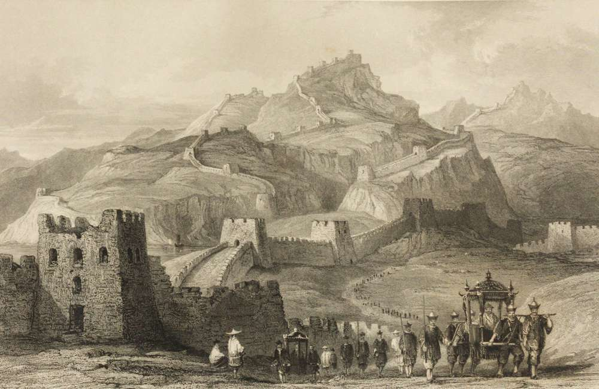
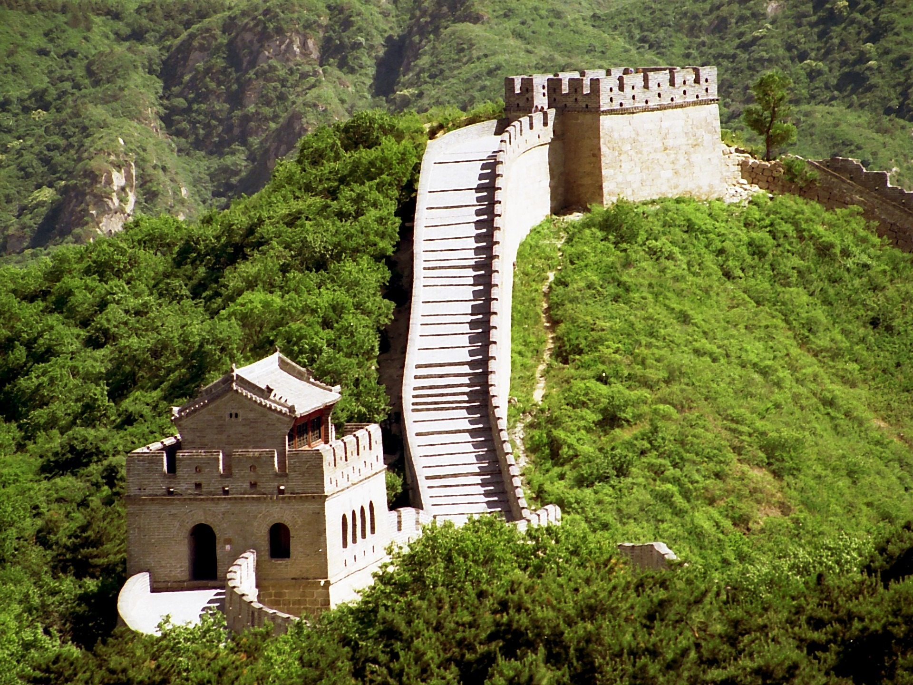
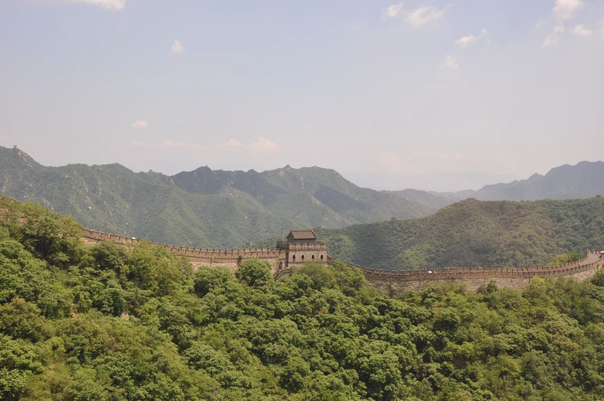
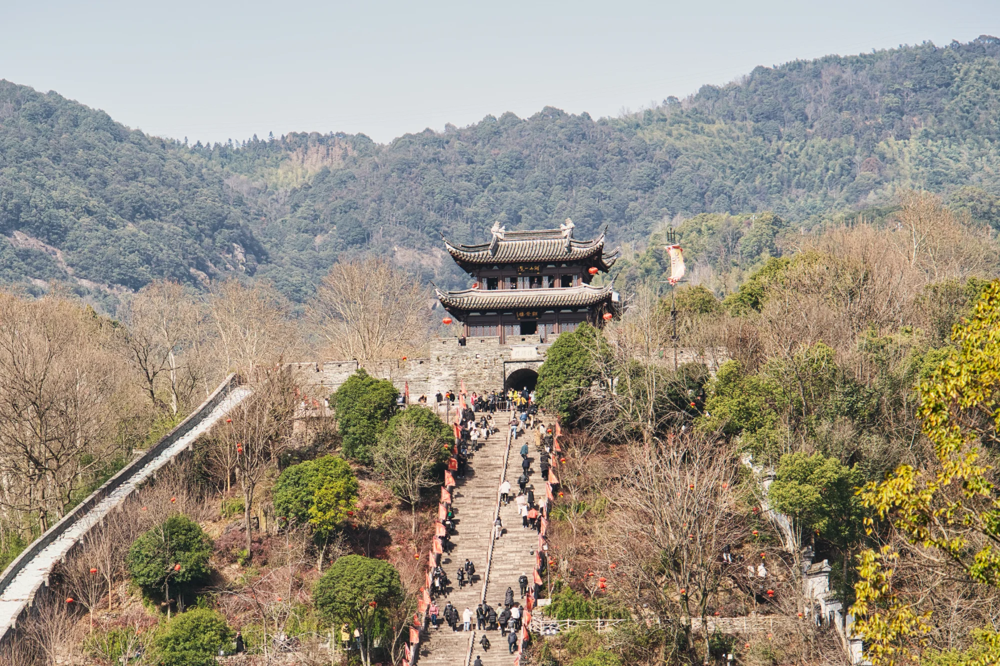

La Grande Muraille de Chine, immense fortification serpentant à travers montagnes et vallées, est un symbole majeur de l'histoire et de la culture chinoises. Construite pour protéger l'empire, elle témoigne du savoir-faire et de la détermination de ses bâtisseurs. Aujourd'hui encore, elle fascine des millions de visiteurs et demeure un puissant héritage du passé.

Histoire
Édifiée sur plus de deux millénaires, la Grande Muraille reflète l'évolution des dynasties chinoises et leur volonté de protéger le territoire.

Architecture & Sites
Tours de guet, forteresses et murs s'étendent à travers montagnes et plaines, chaque section offrant un style et un paysage distincts.

Préservation & UNESCO
Inscrite à l'UNESCO depuis 1987, la Muraille fait l'objet de restaurations continues pour contrer l'érosion, le tourisme et le temps.

Visiter
Sections restaurées ou portions sauvages : chaque itinéraire offre une expérience unique et des panoramas impressionnants.
Chiffres clés
21 196 km
Longueur totale
2 700 ans
Histoire
1987
Inscription UNESCO
10M+
Visiteurs/an
Centre de médiation numérique
Une expérience UNESCO pensée comme un musée digital premium
Le site devient un véritable poste de pilotage culturel : parcours de visite, conservation, accessibilité, cartographie et récits historiques sont réunis dans une interface immersive inspirée de l'encre, du jade et de l'or impérial.
Choisissez votre profil : le site propose une section adaptée, le niveau d'effort, le meilleur moment et l'expérience à privilégier.
Mutianyu · 1 journéeÉquilibre idéal entre beauté, accessibilité et densité historique. À visiter tôt le matin pour une lumière douce.
Conservation prédictive
Indice de fragilité
Simulation pédagogique : climat, fréquentation et érosion sont synthétisés en un indicateur clair pour comprendre les enjeux UNESCO.
Accessibilité
Mode international
Le bouton FR/EN traduit désormais les éléments clés de l'interface et mémorise la préférence localement.
Salle du conservateur
Avant / Après restauration
Un comparateur visuel explique la différence entre une section sauvage et une section restaurée, sans remplacer l'histoire par du spectaculaire gratuit.
Section restaurée
Section sauvage
MCN UNESCO
Carnet numérique
Passeport patrimoine
Une fonctionnalité mémorable pour le jury : le visiteur collecte des sceaux virtuels en explorant l'histoire, l'architecture, la préservation et la visite.A memorable jury-facing feature: visitors collect virtual seals while exploring history, architecture, preservation and travel.
Questions FréquentesFrequently Asked Questions
Contrairement à une idée reçue très tenace, non. Depuis la Lune, la Muraille est totalement invisible. Même en orbite basse, elle est très difficile à distinguer car sa couleur se fond dans le paysage naturel. C'est un mythe né bien avant la conquête spatiale.
Contrary to a very persistent myth, no. From the Moon, the Wall is completely invisible. Even from low orbit, it is very difficult to distinguish because its color blends into the natural landscape. It is a myth born long before the space age.
On surnomme souvent la Muraille « le plus long cimetière du monde ». Environ un million de personnes seraient mortes durant sa construction. Bien que la légende dise que les corps étaient utilisés comme mortier, les archéologues n'ont jamais trouvé d'ossements dans les murs, mais plutôt dans des fosses communes à proximité.
The Wall is often nicknamed "the longest cemetery in the world." About one million people are said to have died during its construction. Although legend claims bodies were used as mortar, archaeologists have never found bones inside the walls, but rather in nearby mass graves.
Le secret de sa longévité réside dans la cuisine : le riz gluant. Sous la dynastie Ming, les ouvriers mélangeaient une soupe de riz gluant à de la chaux vive. Ce mortier organique est si résistant que les herbes ne peuvent pas y pousser et qu'il résiste mieux aux séismes que le ciment moderne.
The secret of its longevity lies in the kitchen: sticky rice. Under the Ming dynasty, workers mixed sticky-rice soup with quicklime. This organic mortar is so resistant that weeds cannot grow in it and it withstands earthquakes better than modern cement.
Ce n'est pas une ligne droite, mais un réseau complexe. Les dernières mesures officielles de l'UNESCO et de l'État chinois annoncent une longueur totale de 21 196 kilomètres, incluant les murs, les tranchées et les barrières naturelles (montagnes, rivières).
It is not a straight line, but a complex network. The latest official measurements from UNESCO and the Chinese state report a total length of 21,196 kilometers, including walls, trenches and natural barriers (mountains, rivers).